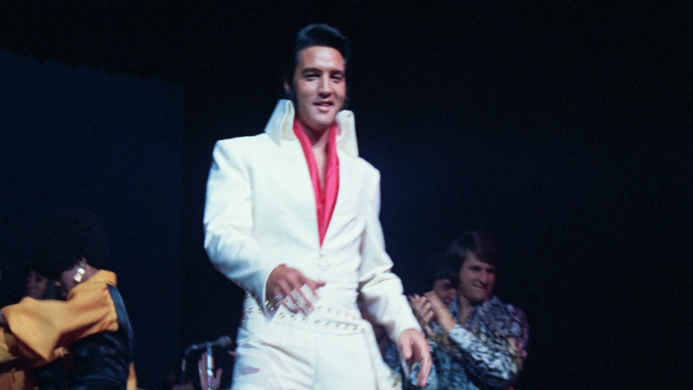

В пятницу, 23 октября 2026 года, компании, контролирующие музыкальный каталог и бренд Элвиса Пресли (в первую очередь Authentic Brands Group), подали федеральный иск против Anthropic. По их словам, разработчик Claude обучал модели на 274 песнях Пресли без лицензии — среди названных «Can't Help Falling in Love», «Burning Love» и «Jailhouse Rock». Истцы требуют по 150 тысяч долларов за каждую композицию — в сумме примерно 41 миллион.
ИИ-компании уже судятся с RIAA и крупными лейблами — Sony, Universal, Warner. Но претензии именно наследников артиста против разработчика ИИ — первые крупные. Отдельная часть иска касается товарного знака и права на образ: как утверждается, данные о Пресли собирались в том числе для того, чтобы модели воспроизводили его голос и стиль. Исход дела может задать планку для всего каталога записанной музыки.
В жалобе утверждается, что Claude с момента релиза способен выдавать защищённый контент из огромного пласта песен, а ограничения Anthropic включила только после того, как её «поймали», — и, по мнению истцов, знала, что меры не срабатывают. Это классическая конструкция умышленного нарушения, при которой суд вправе кратно увеличить компенсацию.
Опасения музыкантов перестали быть абстрактными: Spotify на прошлой неделе сообщил, что за год убрал из рекомендаций около 50 миллионов низкокачественных ИИ-треков, а часть ИИ-ботов уже имитирует живых исполнителей прямо в стримах.
Отдельного официального анонса со стороны Anthropic нет: компания публично не комментировала иск, поэтому все детали исходят из текста жалобы и пересказов СМИ.